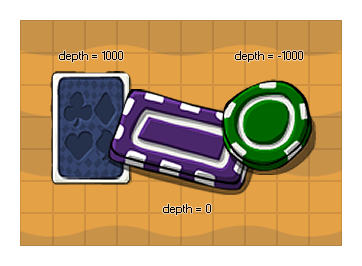

Wenn Sie ein Objekt erstellen, können Sie es eine anfängliche Tiefe zuweisen, die definiert, wie die Instanzen dieses Objekt wird in den Raum gezogen werden, wenn das Spiel gespielt wird und diese Variable kann verwendet werden, zu erhalten und um diese Tiefenwert zu ändern, während das Spiel Laufen. Sie müssten diese Variable normalerweise nicht verwenden, da Sie Instanzen festlegen müssen, die diskreten Layern hinzugefügt werden, die wiederum auf eine bestimmte Tiefe eingestellt sind. Möglicherweise möchten Sie jedoch die Tiefe einer Instanz mithilfe dieses Werts ändern. In diesem Fall wird eine "temporäre Ebene" speziell für die Instanz in der angegebenen Tiefe erstellt. Beachten Sie, dass, wenn keine Instanzen dieselbe Tiefe haben, dieser temporäre Layer aus dem Speicher entfernt wird (im Gegensatz zu normalen Layern, die auch dann bleiben, wenn sie nichts enthalten).
WICHTIG! Wenn Sie das ändern depth Variable und GameMaker STudio 2 verwaltet die Ebenen, die eingebauten layer Die Variable gibt -1 zurück und nicht die Layer-ID, da verwaltete Layer nicht durch Code manipuliert werden können.
In GameMaker Studio 2 der Tiefenwert für eine Instanz um so kleiner, je näher sie der Kamera liegt, während ein höherer Tiefenwert bedeutet, dass die Instanz "weiter weg von der Kamera" gezeichnet wird, dh: -1000 wird über -100 gezogen, was über 0 gezogen wird, was über 100 gezogen wird, was über 1000 gezogen wird. Beachten Sie, dass Instanzen eines Objekts mit der gleichen Tiefe übereinander oder untereinander gezeichnet werden können, auch wenn sie im Raumeditor scheinbar übereinander liegen. Wenn Sie sicherstellen möchten, dass etwas über oder unter alles andere gezeichnet wird, sollten Sie die Tiefe (oder Ebene) immer explizit festlegen.
HINWEIS: Sie können die Tiefe einer Instanz nicht in ihrem Zeichenereignis festlegen (alle anderen Ereignisse sind in Ordnung).
depth;
Real
if y != yprevious
{
depth = -y;
}
Der obige Code prüft, ob sich die y-Position geändert hat und wenn dies der Fall ist, wird die Tiefe ebenfalls entsprechend eingestellt.